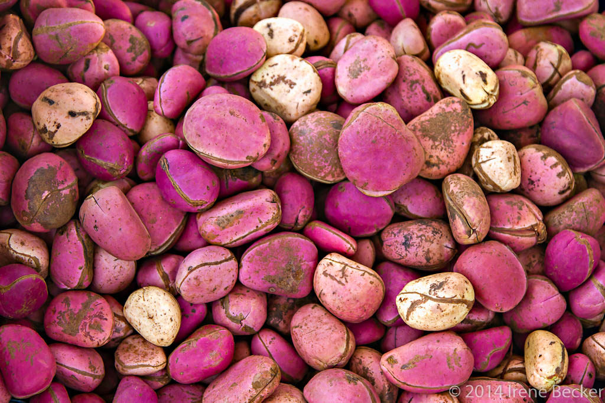

The kola nut is the seed of certain species of plant of the genus cola, placed formerly in the cocoa
family sterculiaceae and now usually subsumed in the mallow family Malvaceae. These cola species are trees
native to the tropical rainforest of Africa
Cola nut has been a popular It grows on the kola tree, native countries like Nigeria,Ghana and sierra Leone Learn more about its fascinating history and modern uses.

BENEFITS OF COLA NUT
Cola nut is used for short-term relief of fatigue.
Cola nut is also believed to aid in digestion and have appetite suppressing effects.
it helps improve mental alertness and focus.
Its used in traditional medicine for its potential anti-inflammatory properties.
Cola nuts can act as a natural stimulant due to its cafine content,providing a temporal energy boost.
SIDE EFFECTS OF COLA NUT
Insomia or difficulty in sleeping due to the caffine contents
Increased heart rate or palpitations.
Digestive issues like stomach upset or nausea.
Anxiety or jitteriness.
Potential interactins with certain medications or health conditions.